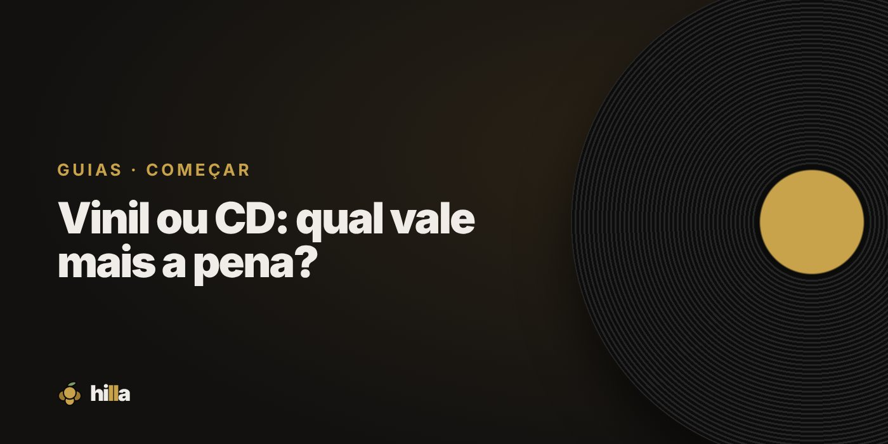

Vinil ou CD: qual vale mais a pena?

Vinil e CD não competem do jeito que parece. Cada um entrega uma experiência diferente, e muitos colecionadores acabam com os dois. Para decidir por onde começar, vale comparar o que importa para você.
Comparação rápida
| Vinil | CD | |
|---|---|---|
| Experiência | Ritual: tirar da capa, virar o lado, capa grande | Prático: coloca e ouve o álbum inteiro |
| Som | Caráter próprio, muito dependente do equipamento e do estado do disco | Limpo e consistente, sem chiado |
| Preço dos discos | Geralmente mais alto, principalmente novos | Geralmente mais baixo, muito usado barato |
| Equipamento | Toca-discos, agulha e amplificação | Qualquer aparelho de CD |
| Cuidados | Mais sensível a calor, poeira e riscos | Mais resistente |
| Espaço | Ocupa bastante | Compacto |
| Arte | Capa de 31 cm, encartes grandes | Encarte pequeno |
Quando o vinil faz mais sentido
- Você quer o ritual e ouvir com atenção.
- A arte da capa é parte importante da experiência.
- Os álbuns que você ama foram feitos pensando em lado A e lado B.
Quando o CD faz mais sentido
- Você quer montar uma coleção grande gastando menos.
- Prefere praticidade e som sem ruído.
- Gosta de discos dos anos 90 e 2000, muitos lançados principalmente em CD.
E por que não os dois?
Muita gente compra em vinil os álbuns favoritos absolutos e em CD o resto da discografia. Assim, o orçamento rende e a coleção cresce mais rápido.
Se for misturar formatos, vale organizar bem. Na Hilla, a Prateleira separa vinil, CD, fita e DVD, e as Estatísticas mostram quanto da coleção está em cada formato. Ainda tem a conquista Multiformato, para quem coleciona de tudo.
Resumo
Vinil para a experiência e para os favoritos. CD para a praticidade e para crescer a coleção com pouco. O melhor formato é aquele que faz você ouvir mais música inteira.
Organize sua coleção na Hilla
Grátis. Prateleira, wishlist com prioridades e diário de audições, no celular.